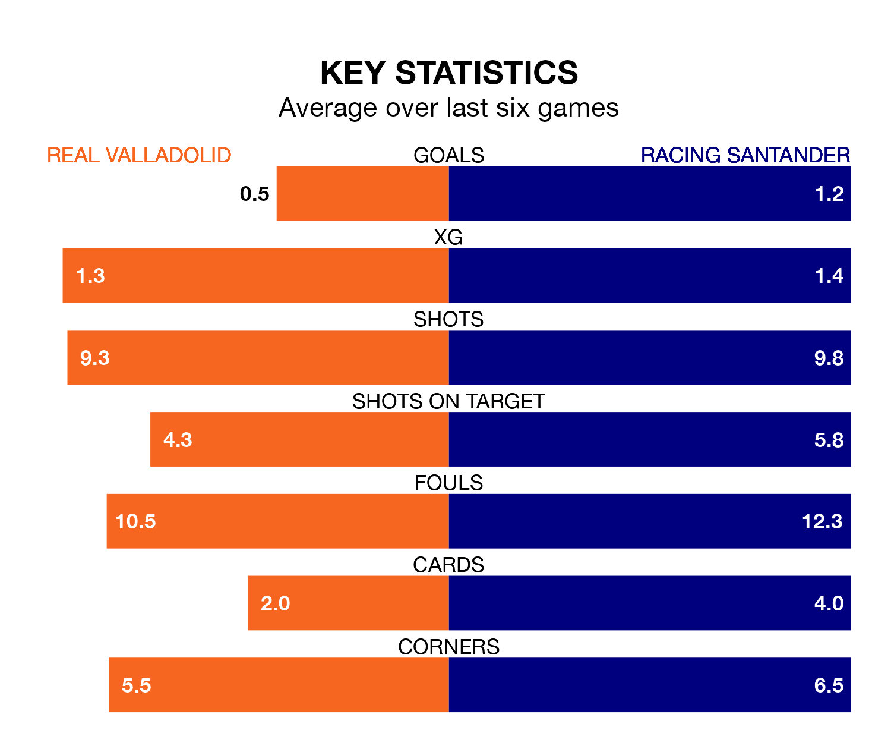

Real Valladolid are on a poor run ahead of hosting Racing Santander at the Estadio Municipal José Zorrilla on Monday, with just four points collected from their last six games.
Valladolid have picked up one win and one draw in their last six Segunda División games, and face a Racing side whose last six games have brought one win and three draws.
With 36 goals in 23 games so far this season, Racing are the league's joint-third-highest scorers with 1.6 goals per game. But they are conceding more than average too, letting in 33 goals at a rate of 1.4 per game.
Valladolid, meanwhile, are below average scorers, with 1.1 goals per game, compared to a league average of 1.2. They have conceded 1.0 goal per game.
In Gerard Fernández Castellano, the away team have one of the league's sharpest shooters so far this season. He has notched 10 goals in 22 appearances, to sit second in the scoring charts.
His goal rate of one every 150 minutes is quicker than that of Mamadou Sylla Diallo, the hosts' top scorer with a goal every 203 minutes, and a total of six goals in 17 games.
Valladolid are 10th in the table after 23 games, of which they have won 11 and drawn three, earning 36 points.
Racing are one place behind Valladolid in 11th, with nine wins and six draws putting them on 33 points.
Valladolid's last match was on January 21, a 0-0 draw against Elche CF.
Racing lost 2-0 against FC Cartagena last time out, also on January 21.
Monday's match will be refereed by Daniel Jesús Trujillo Suárez, who has taken charge of 10 Segunda División games so far this season, issuing one red card and booking 31 players. He has awarded three penalties.
The last Valladolid game Trujillo Suárez refereed was a 3-2 away win against Racing Santander on November 11. His last Racing match was their 3-2 loss at home against Real Valladolid on November 11.
Updated: 13:20 (UTC), 29/01/24